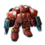
INFANTRY
파이어뱃
기본 밸런스
- 생명력
10075- 속성
중장갑경장갑
업그레이드
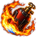
네이팜 탄창병영 기술실 · 100 / 100 · 79초
경장갑 대상 피해 +5, 공격 사거리 +2, 공격 지연 감소.
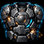
보병 중장갑 연구병영 기술실 · 150 / 150 · 79초
파이어뱃·불곰 생명력 +25, 중장갑으로 전환.
BPM · BALANCE UPDATE
유닛 카드에서 기본 능력치 변경과 전용 업그레이드를 한눈에 확인하세요. 아이콘은 게임에 적용되는 실제 버튼 자산을 사용했습니다.
초반 전열의 안정성은 낮추고, 연구를 통한 역할 확장과 기계 유닛의 선택지를 강화했습니다.


경장갑 대상 피해 +5, 공격 사거리 +2, 공격 지연 감소.

파이어뱃·불곰 생명력 +25, 중장갑으로 전환.
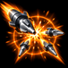
충격탄 연구·유령 사관학교 필요. 충격탄이 반경 1.5의 적을 둔화.
생명력 +25, 중장갑으로 전환.
기본 능력치 변경 없음
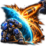
공성 모드에서 아군에게 주는 방사 피해 75% 감소.
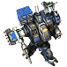
저그전에서 중장갑 유닛을 상대로도 추가 타격을 제공합니다.
기본 능력치 변경 없음
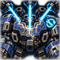
파괴 시 1회 재건설 가능. 건설로봇이 10초간 수리하면 최대 생명력의 70%로 부활.
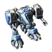
공격력·방어력 업그레이드가 적용되지 않던 문제를 수정했습니다.
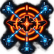
지정 지역의 적 하나를 자동 표적화. 받는 피해 20% 증가, 범위에서 사거리 2 이상 이탈하면 해제.
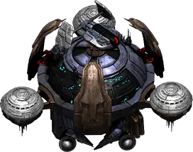
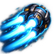
6초간 이동 속도 +2.45. 재사용 대기시간 14초.
변태 단위의 효율을 조정하고, 선택 유닛에 공격·생존·전술 역할을 추가했습니다.
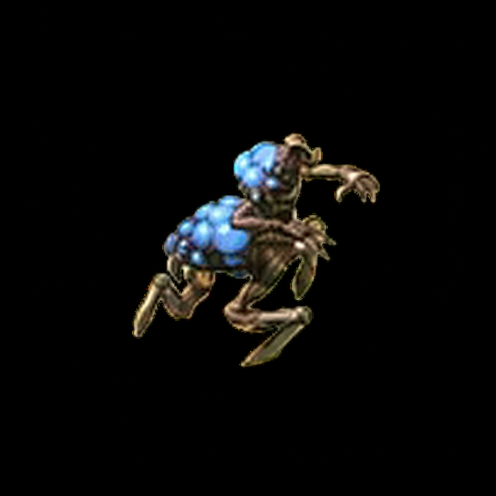
부식성 담즙 능력 버튼이 표시되지 않던 문제를 수정했습니다.
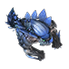
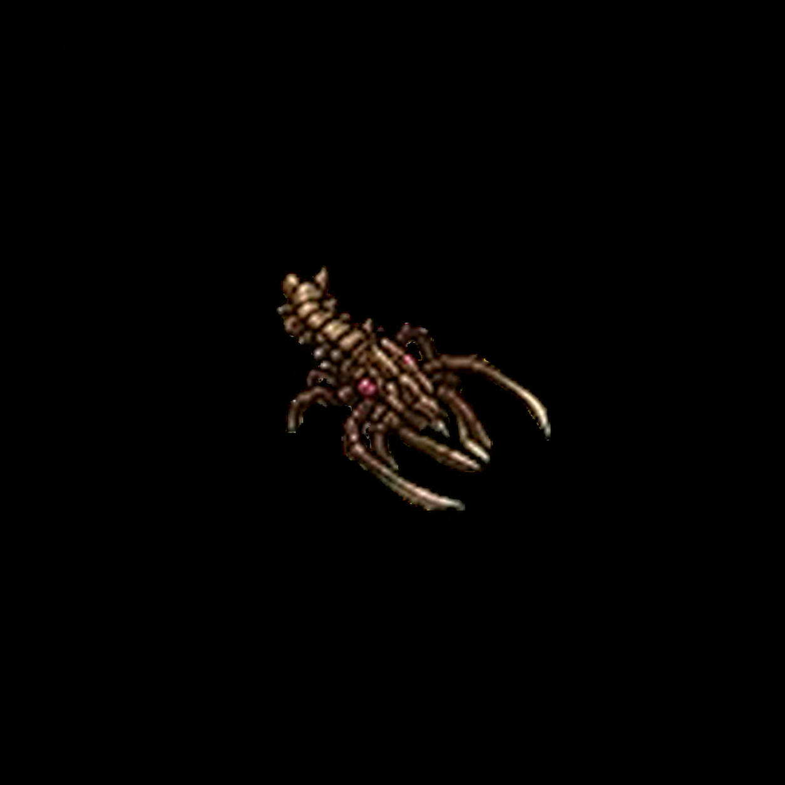
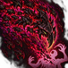
범위 효과는 아군과 동맹만 탐색해 적용합니다.
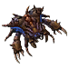
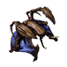
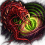
대상 유닛의 시야를 드러내며, 감염 유닛은 부대에서 초록색으로 표시.
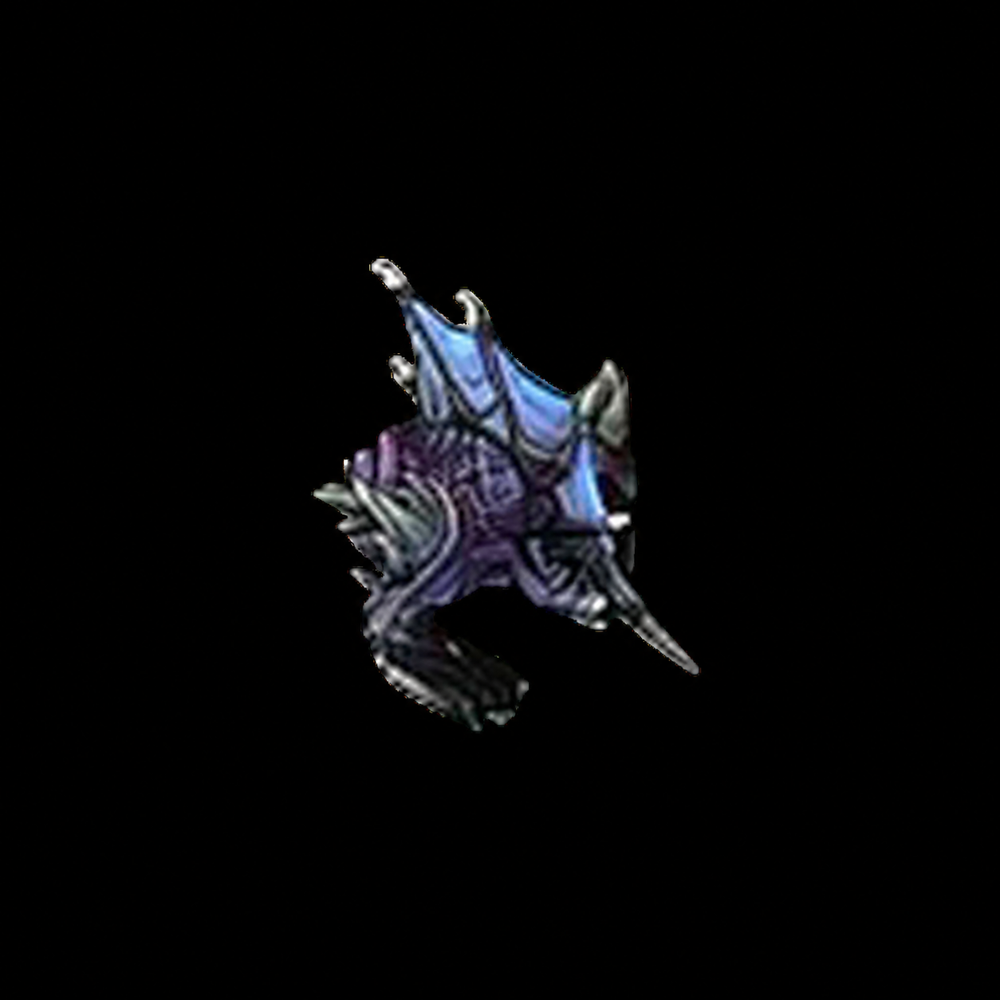
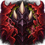
티라노조르 장갑 +1. 티라노조르 선택 시에만 연구 버튼 표시.
선택 과정의 공정성과 생산 화면의 안정성을 함께 보완했습니다.
3밴 구성에서 팀별 연속 선택을 포함하는 스네이크 순서를 지원합니다.
편의성 모드에서 Alt 키로 두 패널을 함께 표시하거나 숨길 수 있습니다.
탐지·수송·동력망 역할이 밴으로 사라지지 않도록 밴 풀에서 제외했습니다.
선택하지 않은 유닛의 전용 업그레이드를 숨기고, 공중 공방업·생산 버튼 문제를 수정했습니다.